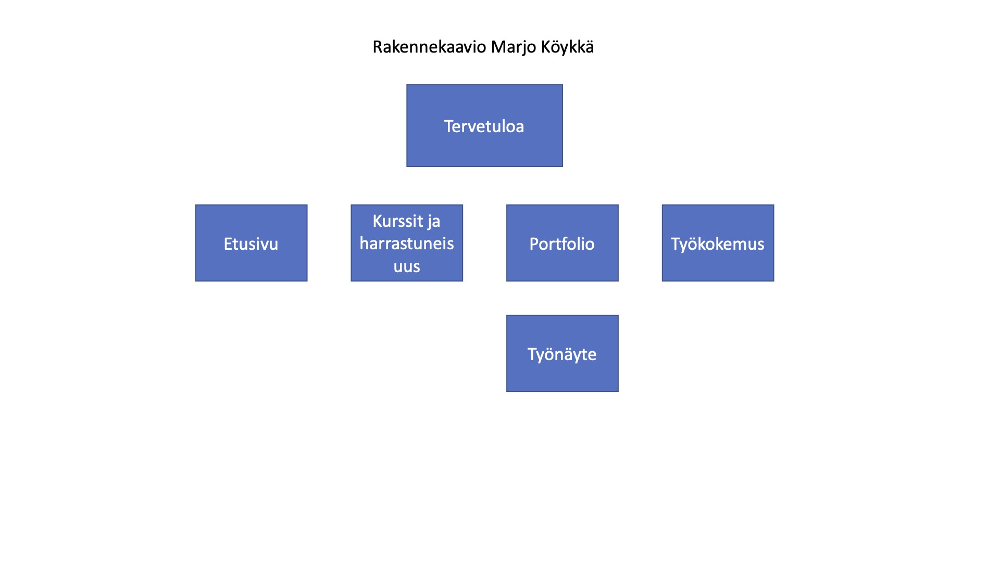

Marjo Köykkä
Synopsis
Portfolio
Mitä tehdään?
Portfolio sivu opiskelijalle, missä yritykset näkevät kyseisen opiskelijan tiedot, osaamisen, mahdolliset
työnäytteet, työkokemuksen sekä muut mainittavat
Kenelle tehdään?
Sivun käyttäjäryhmät koostuvat lähinnä työnhakusprosessien HR henkilöstölle sekä mahdollisille muille rekrytoijille.
Sivua mainostetaan myös muualla, jotta työnhaku tulevaisuudessa onnistuu. Sivut ovat rakennettu siten, että oma
osaaminen omilla kiinnostuksen kohteilla ja mahdollisilla kiinnostavilla yrityksillä olisi mahdollisimman hyvä kuva
opiskelijan/työntekijän osaamisesta.
Sivustoa käytetään lähinnä koneella sekä tabletilla. Sivusto on suunnattu 25-50 molemmille sukupuolille.
Käyttäjäprofiileista suurimmat ovat eri yritysten rekrytoijat. Käyttäjään tehoaa sivuston käytännöllisyys,
visuaalisuus sekä helposti navigoitava ja luettava sisältö.
Kuka tekee?
Opiskelija itse
Laajuus?
Alustavassa suunnitelmassa etusivun lisäksi 3 lisäsivua, joissa jokaisella sisältöä, kuvia ja linkkejä. Mahdollisen
aikarajan puitteissa voi sivumäärää myös nostaa. Kumminkin niin ettei sivun sisältö, rakenne ja muut ominaisuudet
kärsi. Mielummin paremman näköiset pienemmät sivut kuin suuret ja sekaiset.
Mihin ympäristöön?
GitHub Pages.
Turvallisuus?
Ei rajata käyttöä salasanan taakse vaan sivulle on julkinen pääsy.
Visuaalisuus?
Rakennetaan sisällön ollessa valmis. Pidetään yksinkertaisena ja keskitytään harmonisiin väreihin ja hyviin kuviin.
Materiaalin kerääminen ja medioiden käyttö?
Oman materiaalin tuotto.
Tekijänoikeudet?
Kaikki omaa aineistoa.
